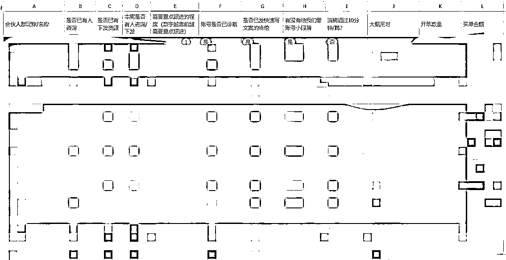
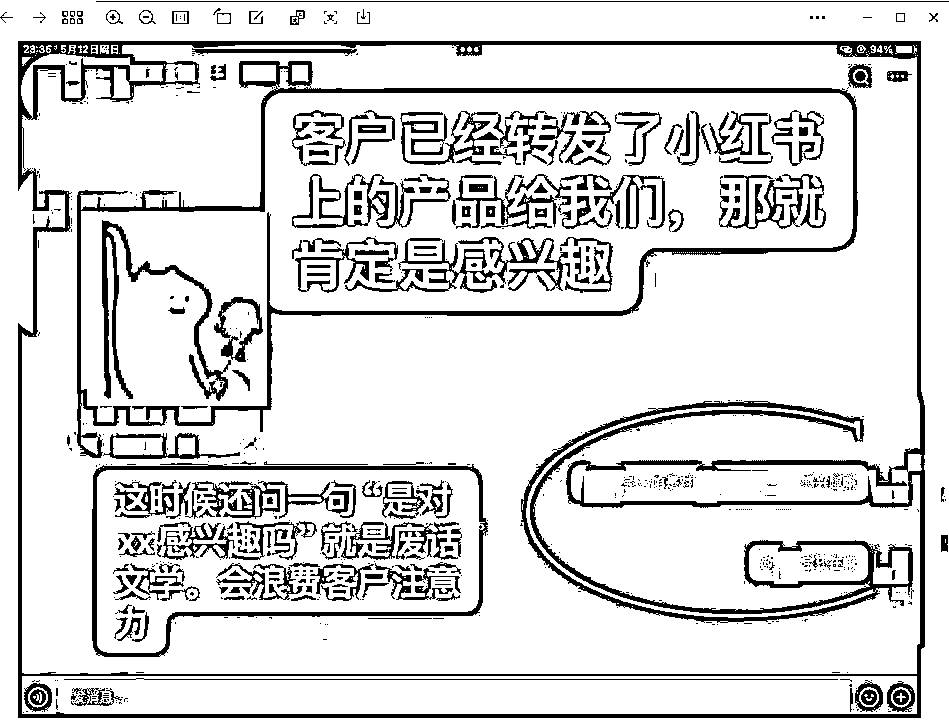
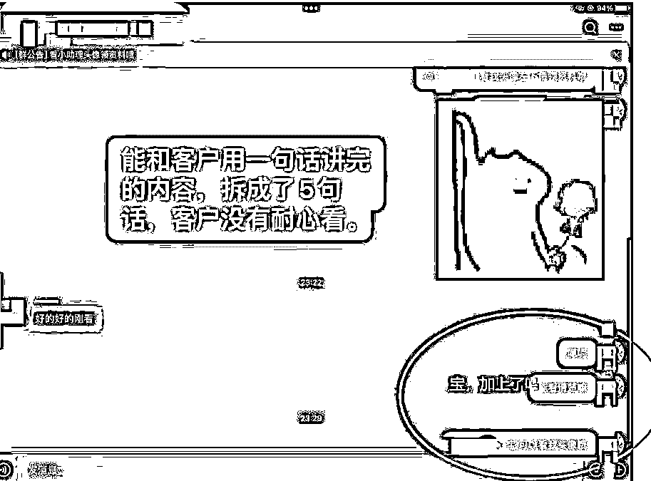
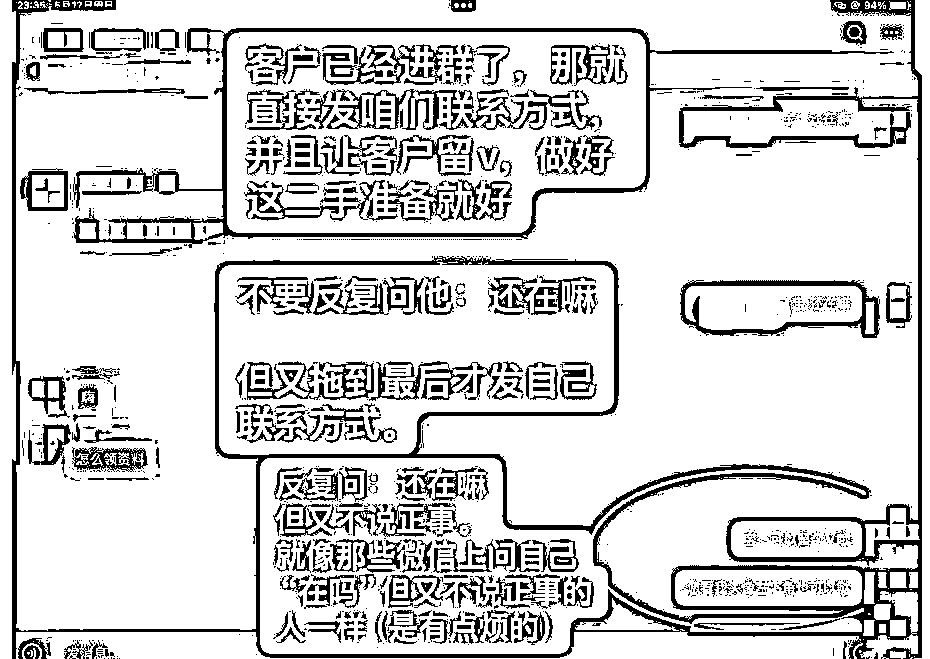
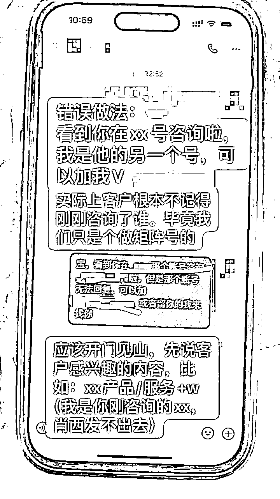
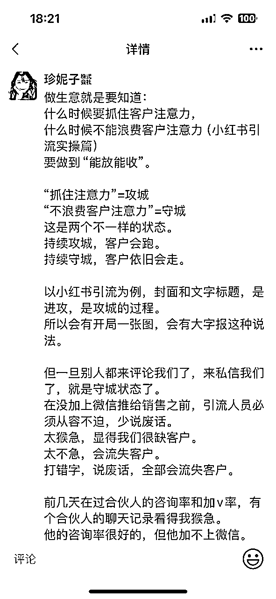
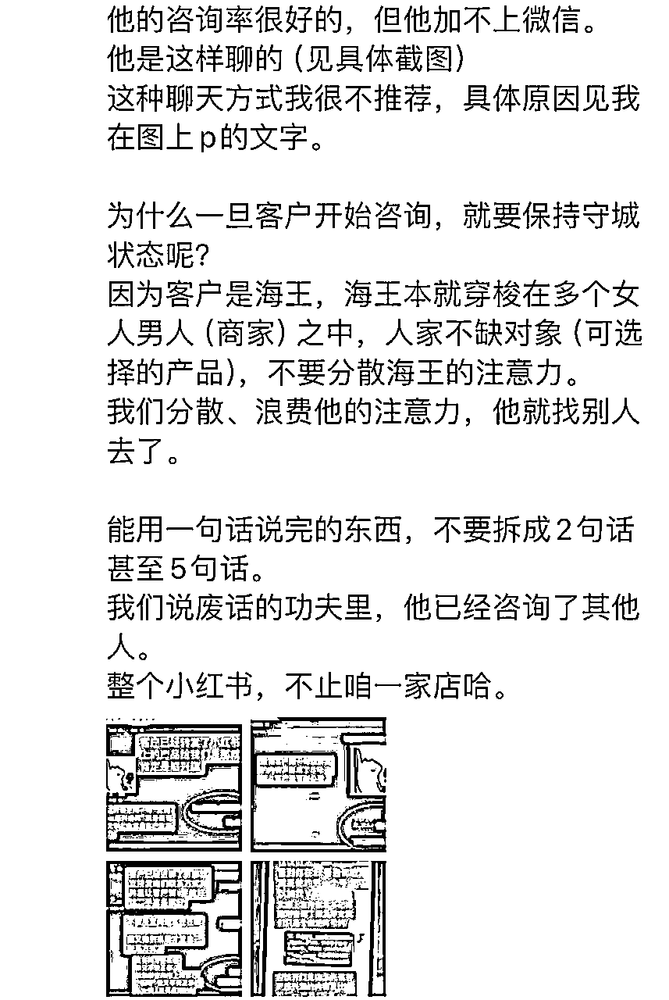
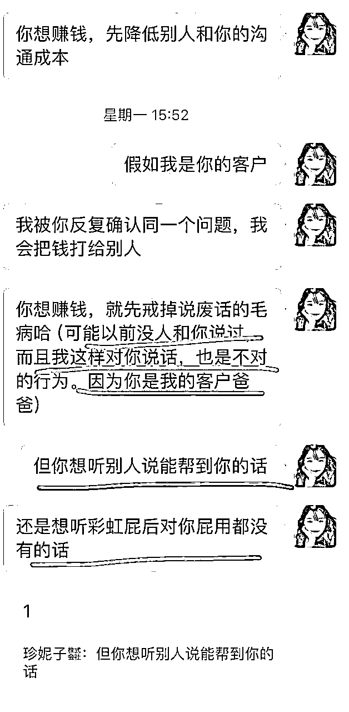
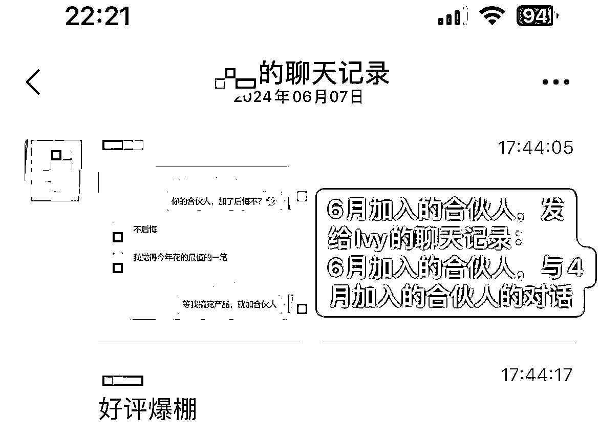
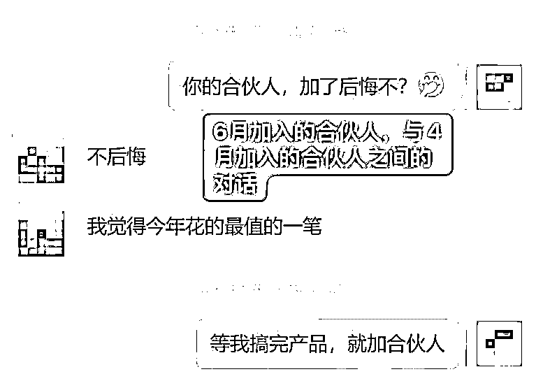

来源：https://ht16ej1tui.feishu.cn/docx/QtsMd4gcVo1Q3PxamivcJACun7b
Hi，你好，我是珍妮，之前和咱们生财圈的陈铭Ivy在22-23年做出了教育赛道2700万的营收，我是幕后运营操盘手。
今年我们除了做自己的业务，接新的代运营业务外，也卖了自己的合伙人产品。
在2个半月的时间里，截至6月23日，我们带合伙人卖掉了122.98万的产品，合伙人返佣XX万（不便在这说）。截至7月1日，共开46单，卖出139.86万（未算客户未支付的尾款）我们也发现了：很多合伙人产品的雷区。
注：本文写于6月23日，所有分析均截止至6月23日。
这是本文目录，感兴趣的老板可以直接电脑端打开跳转。
一、产品设计雷区：怎样设计你的合伙人产品交付指南？
二、招生雷区
雷区1：先弄清楚你的合伙人产品适不适合多招人。
雷区2：第一期的合伙人名额数量，要经过谨慎考虑。
雷区3：对外宣传你的销售转化率时，要手动调低一点。
雷区4：比起收人钱，先拒绝这一类人的钱。
三、交付雷区
雷区1：合伙人摆烂，要怎么办？
雷区2：交付小群可以进来几个人？
雷区3：合伙人做错事/不听劝，要怎么办？
雷区4：负责交付的人做错事，要怎么办？
雷区5：合伙人招错员工，要怎么办？
雷区6：合伙人/员工学会了要单干，要怎么办？
雷区7：合伙人不想放过每个客户，想要把客户利用到极致，怎么办？
四、佣金设置雷区：老客户复购&老带新，给合伙人怎么算佣金？
附录：这是我们之前在生财发过的文章，感兴趣的友友可以跳转：
小红书两年做了2700W营收后：我对「留学行业的趋势分析」
https://t.zsxq.com/DT1SJ
小红书教育赛道GMV1600万/年，小团队创业心法
https://t.zsxq.com/aPL7f
粉丝3000月营收20万，小红书低粉高变现的蓝海攻略分享
https://t.zsxq.com/XXl6X
老板避雷手册|年1100w营收背后，如何识别不合适的运营人员、合作商、合伙人？”https://t.zsxq.com/Fvvr8
老板避雷手册2：运营端忽视这些细节，会让你血亏500万
https://t.zsxq.com/LhyXR
「续集」老板避雷手册3：如何识别不合适的运营人员、合作商、合伙人？
https://t.zsxq.com/2Wg9U
如何和另一半&长辈相处，实现2700w营收的同时稳定家庭？
https://t.zsxq.com/49u9r
在我们卖合伙人产品之前，我们做了市场调研，发现市面上的合伙人，
多半是：陪伴型合伙人，
即：提供实用价值和情绪价值。
又或者虽然提供项目做，但都是几千块的中低客单为主，到手返佣从几十到几百不等。
能签一单就拿三五千利润，甚至八千多利润的合伙人产品，基本，没有。
以前这类陪伴型合伙人产品特别少的时候，幕后老板是很好赚钱的。
但随着相似产品越来越多，经济下行，大家下手会越来越谨慎。
因为：市面上能赚钱的自媒体产品就两种：
1）靠做ip赚钱。
2）靠做不带ip色彩的项目赚钱。
绝大多数人，都不是做个人ip的料，他们只能靠做项目赚钱。
靠做项目赚钱，那就一定是铺矩阵号。
因为没有个人ip色彩，那么铺矩阵号就类似于“市面上开了几十家店铺，客户随机进一家店”，所以：谁回复客户的速度更快，谁更快更好的接待客户，谁就最可能赚钱。
最后，Ivy和我推出了一款市面上从来没有人卖过，又能保证合伙人百分百回本的产品（此处服务权益隐藏）。
效果很好，在发了4条朋友圈，海报都没来得及做的情况下，两天卖出33万（20个名额），后续考虑到让第一波人先跑出来，Ivy就把后来咨询的客户爸爸都给拒绝了，不让客户买单。
结果过了两三周，我们被现实啪啪打脸，临时又收了10几个人进来。
我会在后续提到：为什么会临时收10几个人，以及：我们踩了什么雷区。
合伙人产品交付指南，往往会陷入两个误区。
一个是太简单，大家没法上手。
一个是太大而全，保姆式喂饭，大家没耐心看完。
然后又会遇到另一个危险境地，
你写的这份交付指南：
如果你的合伙人想开放阅读权限给自己的员工看，那么：哪些话可以给员工说，哪些话不能说？
当时我写合伙人产品交付指南的时候，是设计的“大而全、保姆级喂饭”形式。
最后发现：很多合伙人没有耐心看完，尽管我觉得“我写的已经够精简，又够傻瓜式上手了”，但那只是我觉得。
只要客户不是这么觉得，那这就是“写指南的人的自嗨而已”。
当他们没有耐心看完的时候，他们就会犯错，或者会被这看起来很复杂的东西吓到，就不愿意上手了。
后来，我让小助理又出了一个“简单版上手指南”，要求他们私发给每个合伙人的小群。
每个新加入的合伙人，第一天都按照这个方法去快速写完第一篇稿子并且发出去。
让一个人快速开始，比让他快速看完“一份项目指南”要容易得多。这就像：你想健身，健身教练不会一开始让你做高难度的动作，而是会循序渐进，让你慢慢提高自己的体能，把动作做标准后，再教你更难的东西。
带合伙人也是一个道理，给他一个保姆级的指南后，要再给一个简单的、1页内就能看懂的指南。
让他先把简单版指南看懂上手，其他时间慢慢看保姆级指南，这样可以大大提高合伙人开始做项目的速度，帮他们减少畏难心理。
另外，为了解决“如果你的合伙人想开放阅读权限给自己的员工看，那么：哪些话可以给员工说，哪些话不能说？”这个问题，
我们交给合伙人的项目指南，分成了两个文件夹。
一个：是老板和团队都能看的。
一个：是只有老板才能看的。
如果有他们的员工不知道从哪发现了只有老板才能看到的文件夹，找我申请权限，我会非常顺滑的，在飞书点一个“拒绝阅读”。
市面上有两类合伙人产品，
第一类：越少的人知道，你越赚钱。（这种一般是教人做项目）
第二类：越多的人知道，你越赚钱。（这种一般是教人做个人ip或者知识付费）
如果是靠老板自己内部团队赚钱就能垄断，那么就是第一类。这时候是万万不能透露项目名字的。
如果是第二类：“越多的人知道，你越赚钱”，那么老板就每天都要拉新，太累了。
Ivy和我属于：靠我们内部团队没法垄断，因为培训内部人员真的太累了，老板可以工资开低一点来做低企业成本，但会要付出更多培训成本。我们都有家庭，我还有个1岁半的小孩，甚至有二胎计划，我实在没有多的精力再去培训新的内部团队。
当然有的老板会说：那是你自己想要降低成本，你如果愿意每个月花一两万请个高质量的全职员工，你就不用付出这么多培训成本了。
现在的我，完全达不到这个格局。我和Ivy就是小本买卖，舍不得掏出这个钱请人。
我们曾经把711店员培养到和“1万才能请到的人”一样的本事。虽然培训起来累一点，但在创业初期，对于我们两个白手起家的二本免费师范生来说，已经是最好的经营对策。
所以Ivy和我的项目，属于第一类，但我们又由于自己精力跟不上，而不得不招合伙人一块来做。
所以我们没法像第二类产品一样：“一次收一大堆人”。我们必须严控合伙人人数。
为什么第一类产品一定要严控人数呢？
因为：
如果我们一次收几百个人，或者我天天去做直播拉新，收个上千人。那我们就完了。
因为交付速度跟不上，我们内部负责交付的团队没有足够多的精力交付这么多合伙人。
其次：这类产品一定是有一个市场份额天花板的。
当一个合伙人开第一单后，他会马上开5个矩阵号，然后又开第二单，接着他会开10个矩阵号。
当每个合伙人都有4-5个矩阵号，个别合伙人有20个矩阵号的时候，就不能再招新的合伙人了。
否则大家互相内卷，谁都没钱赚，Ivy和我的名声就臭掉了。
假设我们能收500个合伙人，每个人收16999，那我们在不算成本的情况下，只能赚到849万，两人平分后每人400多万，连套广深的好房子都买不起，还在整个圈子都名声臭掉，直接完蛋。
当然，我们收合伙人，是会从合伙人的签单产品中抽取提成的，也就是：合伙人赚钱，我们跟着赚钱。我们赚的比合伙人少一点，但至少，是赚钱的。
所以Ivy和我就很需要把控合伙人的名额，要确保：进来的合伙人有钱赚。他有钱赚，Ivy和我才能长久有钱赚，不然短期赚个16999，也没什么意义。
尤其对于我这种想要“给下一代在广深核心区域买很多套房子的女人”来说，我知道：“我能赚多少钱，取决于多少人希望我成功”。
所以对这种“可能坏我名声的钱”，我都有多远跑多远。
总结：
如果你是教人做项目，其实不太适合招很多人。
如果你是教人做个人ip或者知识付费（类似于陪跑），你可以招超级多的人。
第一期的时候，Ivy和我只定了20个名额，毕竟第一次收合伙人，也不清楚我们自己内部团队的交付能不能跟上。如果一次收多了，像我这种主要负责运营和交付的，平时每天要看N个群聊，我怕我猝s在电脑面前。
结果合伙人收了两周后，我们就后悔了，赶紧开始新增名额。原因就是，我们发现：
我们是4月7号到4月10号左右，陆陆续续把项目指南发给合伙人的，当时的20个人里，为了做项目参与合伙人的，只有10几人，其他老板是想找我们7年1V1无限次咨询才买的合伙人。
然后“为了做项目”而买单我们的合伙人，有的迟迟没有开始行动，拿到项目指南后不见了，整整两周过去了还没开始写笔记。
而有的合伙人之前做过小红书运营，就很希望创新。但是在对一个项目还没有深入了解的时候，想创新，等于必s无疑。那时候我刚开始带合伙人，我还不清楚“这样做会必s无疑”，就没有阻拦。最后合伙人创新了一两周，没什么人咨询，他们急了，我才开始阻拦。
做到后面，新进来的合伙人里，不断有人试图创新，我们就需要不断阻拦。
所以卖合伙人产品的老板也许会发现：如果你只收20个人，那么能够真正跑项目超过1个月的人有10人，就是不错的了。如果这10人里，有5人愿意在一开始严格按照你的指南来，就非常非常好了。
不按指南来，就代表：“开单会特别慢”。
一次只收了20个人，只靠5个人快速开单，Ivy和我会完蛋，我们赶紧新增了名额。
截止到6月23日，我们陆续收了37位合伙人，其中包括1位已交定金但还没有让对方来做我们神秘项目的合伙人（所以还没有拉入合伙人大群）。
这37人里，冲着做项目来买合伙人的有32人，但更新时间超过1个月的合伙人，只有20人。有12人间歇更新或者还没有开始。最后开单的，只有17人。
在没有算某些产品的“尾款”销售额、没有算“给部分合伙人推的代运营业务”情况下，截止至6月23日，合伙人在两个半月里一共卖出122.98万销售额，扣除“某些产品被客户砍价”的佣金后，合伙人拿到的返佣约为XX万（不便在这说）。（注：4月7-10日发项目指南给合伙人，大多数人是4月15-20日开始。）
我自己是有一个合伙人进度表的。他们的账号有没有人咨询；是否下发有限线索；本周有没有下发线索；是否需要找小助理重点跟进；他们的洗稿速度；账号的阅读量；客户买单金额，我都有统计。

最后发现：幸好扩招了合伙人，因为第一批20个合伙人里，只有10人开单。
而当时的20人里，只有2人是在4月就开单的，其他人是5-6月，甚至有5人是6月才开单。这10人里甚至有3人都是间歇划水更新，最后签单的。
这个数据有多可怕呢？代表如果当时Ivy和我没有扩招合伙人，那么：在前20位合伙人做项目做了一个半月后，开单人数只有5人。这无疑会打击所有合伙人的信心，也会臭掉Ivy和我的名声。
高客单价的东西，签单时间要1-2个月是很正常的。
但人的本性就是求快与贪婪，去和别人讲道理，说：“你要等得起，慢慢等”。这是会被人骂的：“你是不是给我画饼？”
幸运的是，到了6月，又有人4月推的资源，陆续签单。
在5月中旬之前，我经常会被合伙人小窗私信，大致是：“我很焦虑，怎么还没人咨询，怎么还没人签单，到底能不能赚钱”甚至有合伙人提出质疑“你是不是作假销售转化率，夸大宣传？”
开门做生意，被人质疑是很正常的事。
别人不了解我，大家萍水相逢，愿意信任我，交合伙人的钱，这就已经是很信任了，但会不会真的放心把后背交给我，这是需要时间的磨炼的。
不是谁都像Ivy和我一样：高中大学都在一起读书，毕业后又联系密切，可以放心把后背交给对方。（而且哪怕我们是“会彼此参加对方婚礼，14年的闺蜜关系”了，我们也会有起争执的时候。）
所以，我们接受一切质疑，也会积极处理合伙人的情绪。
从5月中旬开始，就没有合伙人小窗找我们：“到底能不能赚钱啊？”
因为这时候，大群里的签单数据，大家看得到。群里除了Ivy和我，其他都是真实合伙人，没有水军。能不能赚钱，不需要我说，自然会有合伙人开单，为Ivy和我证明。
总结：如果你是靠“带别人做项目去赚钱”的老板，你第一期设置的合伙人名额，不能太少，也不能太多。
太少，出不了成果，你名声就会臭掉。
太多，合伙人就太卷，最后谁都没钱赚，你的名声就臭掉了。
总之，卖合伙人产品要小心，因为一不小心就会名声臭掉。。
Ivy和我对外宣传的销售转化率是7%。一开始，所有合伙人每天下发的线索，我们是有一个公开的线索跟进表格的。每个合伙人都可以看到所有人的下发线索。
我们设置这个，就是为了保证透明度，让人知道：我没有搞水军充数。这些数据你自己可以看的。
然后悲剧就来了。
之前反复提到：“销售转化率是7%，高客单产品需要1-2个月转化周期是很正常的。”
（实际上：特别少的人会在当天或者1周内签单。绝大部分人要1-2个月签单。还有部分人要1年签单。比如：我自己员工签的单，有时会出现：“22年11月的客户，24年6月来买单”的情况。）
道理是这个道理，数据也是这个数据，甚至Ivy还故意把数据调低了去宣传的。但是：
在5月初，我们还是会面临个别合伙人的质疑，比如：你这个数据是不是作假，合伙人每天下发线索，XX合伙人都下发11条线索了还不签单。
我说：所有数据真实可查，22年到现在所有销售数据，支持你喊律师过来调查，有半点作假，我不仅全额退款，我再返你1万。
最后，这位友友的情绪处理好了。但还是会有别的合伙人小窗问我：珍妮，怎么还不签单啊。
叠加之前有部分合伙人想要开矩阵，想把自己的线索归类到另一张表格，不希望其他合伙人看到。
我们就顺手推舟，把线索跟进表隐藏了，由小助手每周截图合伙人线索表的跟进进度条，单独发给合伙人。
最后，有的合伙人下发3条，4条，5条线索就签单，相当于签单率远远高于7%。但也有合伙人有20条以上的线索，还是没开单，签单率远远低于7%。
这是没法避免的问题。因为如果你恰好遇到一个高意向的客户，你就会在1周内开单。如果你遇到的都是中意向或者低意向的客户，那么就要1-2个月、甚至3个月，甚至1年。
注：我们是这个项目的大型合作方，只要这条线索是在我们渠道第一次下发，那么哪怕一年两年后，这个线索在其他任何渠道被签单，依旧是我们的合伙人拿返佣。这是项目方立下的规矩，变相保护了我们的利益。
总结：调低你的销售转化率，不要给人过高的期待。
把线索跟进表隐藏，可以定期把线索进度主动发给合伙人，但不要让大家能直接看到所有人的线索进度。否则：没签单的人会焦虑。
比起收这37位合伙人的钱，我们拒绝了更多人想参与项目。
不是过来做合伙人项目。而是：目前自己的项目没有跑通，又或者在纠结自己该做什么赛道，希望我们从0到1培训，并且教人如何搭建团队。
这类友友的钱，我们是不能收的。因为我们的合伙人产品是陪伴对方7年。7年时间，要先教一个人如何选赛道，再到如何做项目和培训人，我们的精力不够。
如果对方是自己现有的赛道已经跑通，想要7年无限1V1咨询，我们是可以收的。
有自己的主业，想要过“一天时间用来工作看手机，另一天时间游山玩水，不看手机”的生活，想要跟着我干，all in一把。
这类友友很信任我，但我还是得拒绝他们。
因为一个“没有个人ip色彩的产品”，就一定是“矩阵号产品”。
矩阵号产品，一定会需要“及时回复微信、回复小红书”，否则就没钱赚。
假如我们想要买一个大几万块的家具，路边开了20家家具店，我们是会选择：第一时间热情接待我们的老板，还是会选择：拖了半小时才接待我们的老板？
这就是矩阵号产品的弊端。
如果我们吃不了做个人ip的苦，我们就会要吃“及时回复微信和小红书的苦”。因为没有个人ip的时候，就至少要把回复速度跟上来。
这位友友和我说：“想要从体制内离职，过自己想要的生活，一天时间做自媒体，一天时间放下手机，游山玩水。如果觉得ta的需求不切实际的话，也可以骂醒ta。”
最后，我还是选择骂醒ta：“你想要的生活，是富二代才有的。富一代没法过这种生活。自媒体博主很卷的，哪怕出门游山玩水，都要提前选题，拍视频，剪辑。Ivy和我是全年无休的。我们还没有牛逼到有职业经理人帮我们，我们可以退休养老的程度。”
自己以前做项目的，现在项目不好做了，手里余额低于2万，想要all in一把。
这类友友通常比较过市面上10多个项目了，就想挑一个好项目all in，然后找到我们。但我们也是不能收的。因为当一个人手里积蓄不够的时候，往往心态不稳。“焦虑的心态”一定会反应到自己的事业上，最后很可能：事业做不好，钱也没了。
我们虽然很愿意积极处理合伙人的情绪，但还是更希望：我们能给人带来的是钱，而不只是提供安抚。
如果我们花大量时间去安抚个别合伙人，我们就没法抽出更多时间去交付其他合伙人。
这里不是说：“珍妮和Ivy不愿意给人提供情绪价值”的意思。
虽然我们也知道“情价一天，价值3000”的道理，但我们更明白“交得起16999的合伙人，是冲着结果来的，是冲着赚钱来的，不是为了听我们提供情绪价值。”
究竟是提供情绪价值，实用价值，还是给人送钱？这三者之间，一定是有一个权衡的。
如果你了解过娃姐（ayawawa）的石剪布理论，我想你一定懂：情绪价值（出剪），实用价值（出石头），给人钱和资源（出布），三者之间，是不可能并存的。
三者都存在的，一定是骗子，是会把人骗去缅甸的。
这就像：营养美学的林老师，曾经在他的知识星球提到以下不可能三角：
帅（剪）
有钱（布）
感情专一（石）
三个属性都存在的男人一定是诈pian犯。
放到女人堆里也同理可证。
当Ivy和我把重心挪到：
对合伙人出布（让他们出单、拿到佣金、给个别合伙人派单代运营）
对合伙人出石头（找小助理培训他们如何做项目，教他们如何筛选自己的员工）的时候，
我们势必对人出剪（给人提供情绪价值，安抚对方）的精力有限。
有天天更新的合伙人，就一定有断更的合伙人。断更意味着：ta对这个项目没信心了，ta不想做了，ta累了，又或者ta可能会有恶评。
遇到合伙人断更摆烂，要怎么办？
一开始，我们有位合伙人的笔记爆了，160多个人问价。我们想到：“ta笔记爆了、上手了，我们可以先把精力挪到其他还没有爆款笔记的合伙人身上了”。就没有观察这位合伙人的加V率和线索下发率。
最后大爆发。
合伙人找到我们的时候，已经到了ta情绪的临界点，ta撑不住了，告诉我们：160个人问价，只有几个人成功加V，寥寥几个人下发。叠加ta的家人生病，ta对这个项目失去了信心。
这是我个人的失职，因为我们内部团队都是开聚光直接发微信给客户的，我没有观察到这位合伙人的加V率这么低。我忘记告诉ta：“很可能你的微信号，不能成功发出去。客户看不到你发了微信号，所以他也没法咨询你。”
这件事情处理完的那天，我额外转了600给这位友友做道歉费，并开始重视到“加V率”这件事，去大群里要求合伙人“一定要主动观察自己的加V率并且和我们说：「自己今天加了几个人，什么IP，咨询的什么产品，是否成功下发线索。」”
每一个人的情绪爆发，背后必定有一个曲折的过程。没有人会因为一点小事而爆发情绪，一定是因为其他要求叠加起来没有得到满足，才会爆发情绪。
一个卖“合伙人产品”的老板，要做到“在交付过程中就注意到每个细节，不要让大家积累情绪问题。万一真出现了情绪问题，要及时处理”。
当然，我们也还有合伙人是断更状态，可能有的老板会说：商界就是28定律，能赚到钱的永远是那20%，其他80%都是陪跑，断更就断更了呗，赚钱这个事，还得把钱送到别人嘴里不成？还得去安慰他不成？
这里我也很佩服营养美学的林隆老师（我悄悄加入了他的知识星球），他曾经在他的知识星球里提到：
企业里给你创造80%价值的，就是那20%的人。
对于这20%的人，他们平时不抱怨，也不给你找麻烦。做私域这么多年，实打实的认识了上万个人，能非常认真仔细研究观察分析的，怎么也有两三千。
真正头部的，大经销商大代理，他们有非常多自己的事情要去忙。而且他们知道主要把自己到流量搞好，人设定准，那么销售是非常简单的事。作为品牌方，我给了他们足够的钱，那么他们也很少来找我额外要情绪价值。
那我们不给吗?当然给!给到平均值就行。
或者说，我们给的情绪价值并不是解决日常的销售问题和客户问题，而更多的是帮他们解决除此以外的生活、家庭、情感等等，其他的问题。
而对于另外80%的人，他们虽然创造了20%的价值，但是却要我们投入80%的时间。这些客户他们自己没有赚到他们认为足够的钱，所以才需要品牌方用更多的情绪价值去填补。
这些情绪价值包括日常的交流，包括要听他说别人比我好，包括要给产品赋予更多的价值，比如创新性、唯一性、故事性，包括要提供更多好看的素材(观赏价值)，还包括降价(使用价值)。
你会发现那20%的销售强者自己就会讲故事，自己会拍照片视频的素材，自己会让他们的客户觉得购买了非常高端的产品。
但另外那80%的人，他们的诉求就不合理吗?
不，他们当然非常合理!每个人都处于不同的生态位，他所在的位置就应该提出这样的诉求。而作为一个品牌公司，我们就应该给他们解决这些问题。否则我们轻轻松松就能够通过20%的人赚到80%的钱?凭什么?!
这才不合理呢。
那20%的人给你节省的时间，带来的愉悦和财富，你正是要用这些不均等的获得，来服务另外80%的人。
应用我高中数学老师经常使用的一个做题方法 -极端举例--任何一种生态环境，任何一种销售氛围，任何一种组织架构的形式，永远都会有二八定律，所以，如果你不要这80%的人，那么头部那20%就会自然也分化出二八。
所以啊，不要嫌有些客户烦，因为大部分的客户都是如此。也不要因为你给了某人赚钱的机会，他就理所应当要感谢你，在不同的情境下，你们是完全独立的个体。
【你不要去想，他应该感谢你】，要知道，你是因为他而有现在的成绩，所以你要感谢他，该给的情绪价值一定要给。
不能逼捐，同样也不能逼人感谢。
记住，每一个客户，都很重要。
我从这段文字里学到的，其实是：每个客户爸爸的诉求都是合理的。
如果有的合伙人断更，那么我们要：
1）想办法看怎样让他们更新起来，看看让他们断更的原因是什么：是没法及时回复？还是自己精力不够用？还是自己招的员工总是跑路？是不是招员工时没有招对人？
2）和他们说清楚“不更新会面临什么后果”，比如：如果不更新，后续其他开单的合伙人得到更多正反馈后一定会铺超多矩阵号，到时候项目会变红海，就不好做了。
3）如果确实决定了没有精力更新，那么在下一个蓝海项目彻底跑通后，告诉“断更”的合伙人：你要不要加入。
4）如果间歇性更新但又没有开单，那么ta有情绪问题，我们要积极解决。
人家没开单，人家有情绪问题，正常得很啊！
如果ta也不找我们提情绪问题，我们要安排小助理定期观察对方账号。如果有问题要第一时间说出来。
交付小群，只能进：合伙人本人。
有的合伙人自己不想干，就想让自己手里的人干，这个人可能是他自己的生意伙伴，可能是他临时招的兼职或者全职。
但不管如何，我们都要先和合伙人说清楚：
“交付小群：只能进来你自己一个人。
除此以外，你拉进来、负责干活的人，得是一个「你确定ta很稳定，能在你这里工作半年起步的人」。如果你不能确定ta很稳定，你就把ta拉入【合伙人小伙伴群】，有什么重要通知会在【小伙伴群】里发的。”
为什么要这么设置呢？
因为一开始Ivy和我没有这样设置，就帮几位合伙人培训了他们的小助理。
然后这些小助理也都是合伙人临时招的兼职，干了一两周跑路了，于是我们又重新培训他们新的小助理。
每来一个小助理，就要培训一次。一个交付小群如果有三五个小助理，甚至10个小助理需要我们来培训，那我们肯定顶不住。
所以：我们只培训一个人。这个人可以是合伙人本人，也可以是“合伙人信赖、确定已经能长期干活的小助理”。这样即使合伙人后期扩招自己的运营团队，也会有一个负责人，把当时我们的培训方法，教给其他小助理。
一个付费得起16999的合伙人，用娃姐（ayawawa)的理论来说，一定是一个“有布性”的人。也就是：做事有主见的人。
有主见有执行力的人，天生就适合搞钱。但因为有主见，所以一定会有合伙人“不听劝”。
“不听劝”带来的后果就是：
1）没有按照项目指南来，用了一些自己的骚操作，但是绕了很大一个弯子，最后没人咨询，把自己先累趴下了，不想干了；
2）客户咨询的时候，没有按照我们给的话术和要求设置自己的小红书账号，最后加不上微信；
3）加上微信后没有按照话术来聊天，把客户聊s了、没法下发给销售；
4）下发给销售后发现自己话术不对，其实这个客户没有买单能力，于是线索被销售退回。
遇到这种情况，要怎么办呢？
一开始我还没有意识到“不听劝”会带来的后果，想着：“大家如果想创新，也可以去试试，也许可以试出比我们现有的方法要更好的办法呢？”
最后是我想多了。
因为Ivy和我从16年开始就在留学行业混。
Ivy是16年混留学申请行业，我是从翻译行业、中学英语老师、混到雅思老师、外研社口语比赛评委、留学生作业代写、留学生润色与翻译，一步一步走过来的。
我俩非常懂留学生在想什么。再加上这是我们两年做了2700万的项目，我们就是知道：到底用什么样的封面、什么样的素材，最能吸引到不同专业的客户。
所以如果我们都想不到更好的办法，那么没人可以想到更好的办法。
所以，我们开始阻止“不听劝”的合伙人，我们会把“你这样做下去，会带来什么不好的后果”全部摆到明面上说出来。
甚至，我们会和合伙人强调“不要说废话”。说废话就没钱赚。这里浅浅的晒几个：说废话就没钱赚的案例，以及我当时在朋友圈的思考。






对合伙人说这种话，已经是“说的很重的话了”。
合伙人是Ivy和我的客户爸爸，不到万不得已，没人对客户爸爸说重话。
所以其实我一直在犹豫：我要不要说呢？如果我说了，那其实是不太尊重我的客户爸爸。
如果我不说，我就是任由ta一直犯错，最后ta没钱赚，可能会怪我。
犹豫了很久，还是说了，与其捧杀合伙人，不如让他们看到真相。

我们负责交付的小助理，以前从没一天内服务过这么多合伙人。因为ta以前就是做运营引流的，只需要用固定话术筛选客户，然后下发给销售就行了。现在一次接待这么多合伙人，遇到有的合伙人不看项目指南就提问题，小助理有时候就会生气。
ta有时候分不清这到底是哪位合伙人的群聊，就把“想对A生的气，发到了B的头上”。
这件事被Ivy和我看到后，当天ta就被批评了，Ivy又去私聊合伙人道歉。
做生意的人，是不能对给自己打钱的客户爸爸发脾气的。自己的员工就是自家的孩子，要自己管。不然ta在外闯祸，对客户发脾气，背锅的就是自己。
和客户吵架，吵输了，是你输了，吵架吵输了生意没了；
和客户吵架，吵赢了，还是输了，吵架吵赢了生意没了；
这段话，是我在拱卒创峰会学到的。
工作上遇到不顺心的事，那这个脾气应该发泄到其他地方，而不是发泄给“给自己打钱”的人。
于是，我们内部写了一本“石性剪性提高手册：如何服务你的客户爸爸”。
我会把“每个小助理和客户聊天时，有问题的聊天记录”截图出来，并且抹掉小助理的头像。
强调“此次培训不针对任何人，只针对这件事。大家想要继续在家上班，就要学会服务好别人，要懂如何给客户提供实用价值和情绪价值。”
然后我会挨个指出：
“为什么这样聊天是错的？怎样做才是对的？背后的逻辑和原理是什么？下次遇到什么样的事情，要怎样处理。”
我平时也会在知识星球更新：如何对客户爸爸出石出剪的内容。也许看起来是我平时对生活的观察，是我的反思，其实这也是我们内部员工的培训内容。
我会和他们说：如果不懂什么是实用价值和情绪价值。不懂出石和出剪是什么意思，请看珍妮的知识星球。这样培训完一波后，他们做错事的几率又降低了70%。
剩下的30%，靠Ivy和我观察。如果发现他们有什么可以改进的，我们再和他们提。
做老板的，只要你还想要你的小助理继续在你这里工作，而不是裁掉ta，你就要在“带他们往上走，往前进的路上”，在发现他们犯错时，及时指出来。
我们合伙人有一个“资本家之路”的群，教合伙人如何成为资本家，会在里面分享：Ivy和我招人筛人培训人的方法。
但不是每位合伙人都有时间看群里的内容，所以他们招错员工的时候，我们会私聊合伙人：“这个员工，你在哪里招的？什么学历？有什么过往经历？工资给ta定多少？ta和你聊天时发的啥？”
然后私聊合伙人：“这个项目，你要招mbti16人格中的哪几类人，你才能长久稳定的赚钱。
要招什么专业，要去什么学校，学历应该是啥？”
个别合伙人，因为没有招人经验，会把和“来应聘的员工”的聊天记录发给我们看。
我们会通过“应聘者的答复，ta的微信头像、昵称、朋友圈内容、16人格”来告诉合伙人：“这个人，能不能招”。
这是一位找我们七年无限次数1V1咨询的老板提出的问题。他不是来做我们合伙人项目的，但是他想无限次咨询。
这个问题，在Ivy和我招合伙人之前，就考虑过了。
我们是这么答复的：
假如你是有自己的项目，想要招员工干，怕员工要跑路，你可以：
1）账号由你创建，手机你买好寄给他，这些全部签合同，你的矩阵号就是你的规模。他学会了也干不出你的规模。别人单干之前都是会权衡利弊的，只要你能给他：单干之后都得不到的待遇，他不会走的。
没几个人能单干创业成功，光是规模这一点就干不过你。配图，运营，选题，销售，每个环节都要定期更新打法或者素材，一个人出去单干，不一定有抱团干活赚的钱多。
2）一开始招员工的时候，就要细心筛选。具体筛选方法不便在此透露。
假如是合伙人要跑路，说实在的，Ivy和我不怕合伙人跑路，因为：
1) 我们有和合伙人签竞业协议。这个东西就是个君子协议。只能防君子不能防小人，就是走个流程而已。但哪怕只是一个流程，也能看出对方的态度。
2）我们在小红书已经占据了半壁江山，无论谁跑路，都做不到我们的规模。也没有人比我们更懂留学，更懂运营，更能把控背后的销售转化率。同一个客户，推给其他任何渠道，都拿不到我们的签单率。
3）我们是这个项目最大的合作方。项目总部甚至已经规定：谁第一次下发的这个资源，后期无论学生在哪个渠道签单，佣金都返给“第一个下发资源的人”。而我们从22年开始，每月给合作方推600条资源，无论这个资源最后在哪下单，都是我们赚。
4）我们能带来的，远不止是这一个项目的价值。还有Ivy和我挑高客单项目的眼光、我们能接触到的优质老板资源、我们能把控的签单转化率、我们能把新手培养到“非常上手”的运营SOP。换任何一个人单干，都干不出我们的效果。
任何技巧，在绝对性优势面前，都是纸老虎。
同一个客户，一定会有不同的需求。比如都是留学生，可能他需要：留学生课程辅导、留学生作业代写、留学生夏校、留学生实习、留学生海外租房等等。
所以当我们的产品没法满足留学生需求的时候，会有合伙人问我：珍妮，咱们要不要试试，把这个学生推给其他合作方？
我是23年3月就知道：留学赛道会下滑。
所以我在23年上半年都在测：怎样利用AI提高我司的洗稿效率。
又在23年下半年：加了上百个不同留学细分业务的同行，去给他们推人头。
甚至我还带了几位团队小伙伴去跑留学赛道的其他细分业务。曾经短暂为我们公司挣了几万块钱，但是花费的精力远远不止几万。
可能有很多友友是因为我那篇
“小红书两年做了2700W营收后：我对「留学行业的趋势分析」”（原文链接：https://t.zsxq.com/DT1SJ)
或者
“老板避雷手册|年1100w营收背后，如何识别不合适的运营人员、合作商、合伙人？”（原文链接：https://t.zsxq.com/Fvvr8）
了解到的我，那正是我踩过的血泪。
但最后我发现：像我们一样：能做到把运营&销售&交付做到极致把控的项目，几乎没有。
我们给一些老板推了四五十个人，一单也没签。
我们又给另一些老板推了几十个人，单是签了，交付太菜，最后屁股是我擦的，我还赔了钱。
我们还亲自接销售，接了一些不太好，或者看似很好的用户画像，最后也没签几单，要么到现在还没拿到佣金，要么我费劲和客户打了一下午的电话，被她发了好人卡“你人真不错”，然后她又给我推了她的好朋友，好朋友也说“谢谢你珍妮，你人真不错”，最后都24年6月了，还没买单。
就算买单我也就拿个两三千块，不知道赚着有啥意义。
最后我含泪抱住Ivy：“你是对的，市场上根本没什么好项目，我再也不搞这些有的没的了。”
留学赛道很多细分业务，在24年的今天，都不值得做，或者已经非常难做了。
如果你对留学赛道没有任何深耕，以为懂点运营技巧就能自己琢磨赚到钱，那确实想得太美，只有亏掉裤子的份。
我们也砍掉了一些杂七杂八的项目，只把精力聚焦到有限的项目上。我们自营的一个留学项目，已经到了濒死边缘，只剩下我们做了两年的代运营留学项目。
除此以外，我们全员接了“非留学赛道”的代运营项目，只把留学的个别项目，当做我们的保本。
当有合伙人，想把手里的留学生资源利用到极致，问我们有没有资源的时候，我都会把我去年的血泪案例告诉他：“推给留学生其他项目，把他们推给任何合作方，你能赚到钱的概率，大概是100个客户里能签3单。我们不做哈。如果你想做，也可以尝试联系一下他们。”
这是一个“你想不断拉新、还是不断留住老客户”的问题。
我是娃姐（ayawawa)的学员。娃姐曾经说过一句话，原句我不记得了，但我领悟到的意思大概是：“每个人的时间和精力都是有限的。要么把时间留给新客户，不断拉新，要么把时间留给老客户，不断留住老客户。不可能对老客户和新客户一样好的。因为如果都是一样好，那就是没有区别的好。这种无区别的好，是没有意义的，最后老客户和新客户都不会重视你的好。”
所以，Ivy和我很少拉新，我们把精力留给我们的老客户，我们也不想招很多合伙人做项目。因为越多人进来，就越卷，会导致“第一时间选择我们的老客户，利益被侵蚀”。
我们给到老客户的利益，是最多的。而一个老客户（比如我们的合伙人），他推的留学生，在我们这复购了，或者带了新人过来，那么：在留学生也是老客户的基础上，留学生可以拿到推荐费。我们的合伙人，也会拿到开新单，一样的佣金。
这个规矩，在合伙人产品还没开始卖之前，就已经存在在我们内部团队了。虽然内部团队拿到的佣金没有这么多，但是：他们会突然天降横财。因为发现：怎么一年前的老客户续购了，我也有钱？怎么一年前的老客户转介绍了新客户，我还有钱？
对老客户好，他们就会给你转介绍，你就会越来越有钱。
我们有一位6月加入的合伙人，一开始推荐了自己的学员，在4月买了我们的合伙人。
2个月后，6月那位的合伙人，也想买我们的合伙人，就去找4月加入的友友做了调查。做完调查后就来买了我们的合伙人，然后夸“你们好评爆棚啊”。


这就是留住一位老客户的力量，当你能留住老客户，你是不需要怎么费力拉新的。
我在24年合成了一颗龙珠，并且获得了3枚龙珠碎片。
第一枚碎片，我想赠给：陈铭Ivy。
第二枚碎片，我想赠给：梁靠谱梁医生。
第三枚碎片，我想赠给：娃姐（Ayawawa)。
我们业绩下滑的时候，她愿意让我去试别的项目，这不仅消耗我们共同的钱，还会导致我分散精力，没法把重心放在现有的项目上。
我想“做个人ip、不想在C端卷”的时候，她默默把控我们老项目的销售转化，让我去做299的小红书运营避雷社群。在她眼里，她明知道这个东西不赚钱，还每天消耗我很多时间，但她愿意支持我，并且发朋友圈帮我宣传。（她不是一个爱发朋友圈的人，而且她很注重隐私）
我想“卖合伙人产品，但又不想卖陪跑、不知道卖什么东西”的时候，她愿意把我们的项目发出来，让合伙人加入来做。这一定程度上，加大了她每天的工作量，因为她现在每周都要查销售和客户的所有聊天记录，还要给“和客户聊得好”的销售发奖金。她本没有那么大的物质欲望，却因为我想搞事业，搞名声，而不得不加大了她的工作量。
我们做代运营产品，是她在和给我们派单的老板沟通，是她在回听“老板、小助理和客户的每段腾讯语音录制”，是她在优化“小助理的接待话术”，是她在寻找靠谱的项目负责人，和对方沟通，帮我减轻我的工作量。
我会有脾气急，开始抱怨骂人的时候，是Ivy指点的我，提醒我：“赚钱就是要受委屈的。没有不受委屈、不需要怎么出力就能赚到的钱。”
我本没有战略思维，但在Ivy的带领下，渐渐有了看破全局的能力。
我加上梁医生的微信是2021年6月3日。那时候Ivy和我说：她认识了梁医生，觉得我和梁医生的盖洛普天赋图特别像，都是影响力天赋max，让我一定要加上，多围观梁医生的朋友圈，让我多学习。
大概在我做生意一年后，我发现：我们只是影响力像，我的执行力远远不如梁医生。
21年开始，我在梁医生朋友圈默默围观，了解到：梁医生做营养美学做到月入10万，后来又成为生财大名人，再后来在全网都是大名人。
我和Ivy都买了梁医生的销冠群和玩赚合伙人，并且从中收获超级多。每个做自媒体的人，一定，一定要记得打一份钱给梁医生，去她的销冠群泡着！
我是20年3月了解到的娃姐。那时候我刚和前任分手，被我们班的一位美少女悄悄安利了娃姐。作为一个女石布，我喜欢找人索取情绪价值而不自知。没有女布赚钱的能力，但女布的臭毛病我一个也没落下，还喜欢把对象当工具人。
但是24年的6月，我已经顺利结婚，还生了小孩，公公婆婆也对我很好，这本不是我这种性格的人能过上的人生，但现在我拥有了我本得不到的待遇。和爸妈、和老公的关系，也处得比我以前好很多了。
我还是进娃姐的大星球太晚了，20年我只是看了娃姐的公众号，直到22年我办完婚礼才开始进娃姐的大星球。如果我早一点进大星球，我想我可以少做很多错事。
我在23年3月了解到留学赛道会下滑，这不是我自己琢磨出来的。我在之前的分享“小红书两年做了2700W营收后：我对「留学行业的趋势分析」”中，（原文链接：https://t.zsxq.com/DT1SJ)一直有提到：我是有贵人指路。
这位贵人就是娃姐。我是娃姐ip课的学员。自从上过ip课，娃姐每年的ip课都成为了我必定会复训的课程。
我在“老板避雷手册|年1100w营收背后，如何识别不合适的运营人员、合作商、合伙人？”（原文链接：https://t.zsxq.com/Fvvr8）提到过“实用价值与情绪价值”，当时生财邀请我做直播嘉宾的时候，有友友想了解这到底是什么意思。
其实“实用价值与情绪价值”这个词，就是娃姐提出来的，我只不过是为了方便娃圈以外的友友理解，所以当时没有用剪石布理论来概括。
我也上了娃姐的高阶厨艺课，这在疫情期间，极大增进了我老公和我的感情浓度。虽然我做饭还是不怎么好吃，但至少我变得会做饭了，而且是最快速度学会的做饭。
我也有上娃姐的婚规师课，但我没有顺利毕业，我没能坚持看完必看的书，也没有上交论文。但婚规师课让我更进一步明白了石剪布理论，甚至打通了我做小红书运营的底层逻辑。
我每天都会刷娃姐的星球，每个晚上都会听娃姐的公众号，作为一个女石布，我本质上依旧是一个布，会一不小心就做了错事而不自知。
娃姐，以及各位婚规师、娃粉的知识星球，都是我每天晚上必刷的内容。就像一个不会游泳的人，要每天都在泳池里多泡泡，多练习练习，才可以好好维系自己的婚姻，让自己不内耗、同时好好干好自己的事业。
感谢你们的信任。
对于已经开单的合伙人爸爸，我们会努力让你们开更多单。
对于还没有开单但一直在更新的合伙人爸爸，我们会关注你的账号运营并跟进销售端，你的努力，一定不会白费。
对于间歇性更新的合伙人爸爸，我们会关注你的账号状态。
对于还没有开始做项目的合伙人爸爸，我们一直都在。
对于想七年1V1无限次咨询的合伙人爸爸，你有什么想解决的，we'll always be there for u。
同时，我们会不断提升自己不同平台的运营水平，销售转化能力，商业模式搭建能力，
让你得到一个“能为你提供越来越多价值的”珍妮和Ivy。
感谢你们的信任。
市面上的好项目很少很少，Ivy和我也在寻觅这样的好项目。而当代运营客户爸爸带着项目来找我们、甚至还给我们运营费用的时候，Ivy和我就像发现了：“下一个10年，我们应该做什么项目”的新大陆一样。这无疑是留学行业从业者的一次转型。
我们非常、非常感谢您，把这个项目，交给我们来做。
作为一个做代运营的，我们本职工作就是给客户爸爸推人头，但给我们派代运营单子的老板，给的并不是一个工作，而是一个“下一个10年，我们可以抓住的巨大机会”，真的非常非常谢谢老板！
我是24年加入的拱卒创峰会和玩赚合伙人。
我会看拱卒推荐的书，看群聊里最近在分享哪些重点。
我也会在打磨产品遇到问题时问芷蓝姐，她站得更高，看得比我和Ivy要更远。
我是花爷IP五期训练营的珍妮子，拿过优秀小组长，优秀学员，优秀（想不起来了，总之有3个优秀奖，我拿了个遍，最后还吃到了花爷寄的凉皮，香！）。
21年加入训练营的时候，我还只是个小组长，做着自己的小生意，对引流一窍不通。我穷到连买花爷2000多块的训练营，都要和Ivy平分。
但在我做自媒体2年后，我发现：妈呀花爷的IP初阶训练营，真是全网最划算、性价比最高、最适合ip小白加入的训练营！什么良心产品啊我的天！！！！
感谢甲申同文翻译，感谢同声传译行业的Jacky老师，Alan老师、韩泽婷老师。
我是17年参加的甲申同文翻译的线上笔译训练营，从此让我理清了“如何写对一个句子”。
当时我还是个穷鬼，Jacky&Alan&韩泽婷老师特别认真地指导我，他们上的课真的太好了！
以至于我从训练营毕业多年，发现：
咦怎么我写公众号的时候，能用上当时学到的翻译思维，
怎么我做雅思写作老师的时候，我比其他老师懂的套路多得多？
怎么我做小红书运营的时候，我还是能用到当时学到的翻译思维？
之前我曾反复提到，Ivy和我21年是个穷鬼，（准确来说：Ivy比我富，我才是那个穷鬼）22年我们加入的生财。Ivy快速看完生财精华帖，又加上几位大老板微信，通过精华帖和大老板的指点，我们迅速在22年成为了小富婆。
一个这么好的平台，竟然有人把赚钱的门门道道说的这么明白。
对于Ivy和我这种：“一个家里老妈开幼儿园，一个家里老妈在幼儿园教书”的二本免费师范生，没人教过我们这种做生意的门道，但是生财教了。
我们在大学学不到的东西，生财教了。
我们靠原生家庭学不到的东西，生财也教了。
生财竟然还邀请了我去做直播嘉宾，还竟然给我发了实战家的牌子，我现在把纪念牌立在我家电脑办公桌前，我的妈呀，这情绪价值简直拉满了！！！
在做自媒体这条路上，Ivy和我也是学了很多很多东西的，甚至我们打工的那些年，都是加班狂人，打一年工，相当于别人上三年班。
可能有的友友也学了很多，但还没赚到钱，那可能是你还缺了某个技能点，或者还缺某个好时机，别气馁，你学到的每个东西，都不会白费。